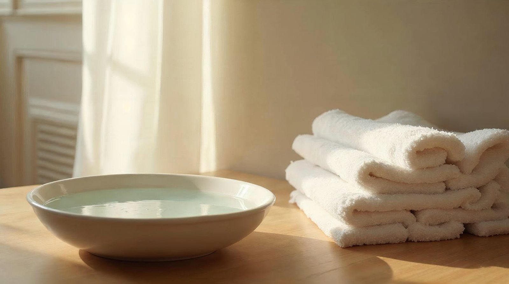
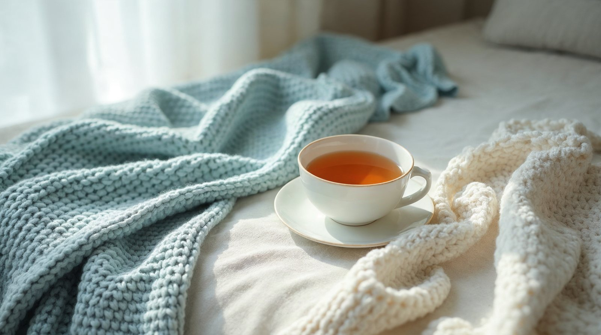
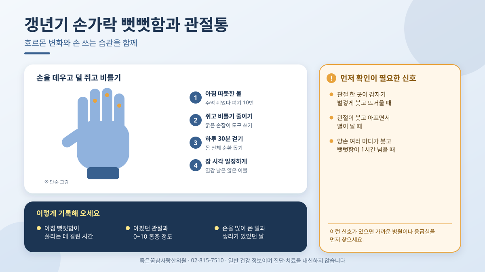

이종호 한의사 감수좋은꿈참사랑한의원 대표원장 (한의사 면허번호 19769)발행 2026-11-26 · 수정 2026-11-26
이 글의 차례
아침에 눈을 떠 이불을 걷으려는데 손가락이 잘 굽혀지지 않습니다. 주먹을 쥐어 보면 손가락 마디가 뻑뻑하고, 손바닥이 부은 듯 둔합니다. 세수를 하고 설거지를 하며 몇십 분 움직이고 나서야 조금 풀립니다. 예전에는 없던 일이라 '혹시 류마티스인가' 하는 걱정이 슬며시 듭니다.
갱년기 무렵 진료실에서 정말 자주 듣는 이야기입니다. 얼굴로 열이 오르고 잠이 얕아지는 것은 많이 알려져 있지만, 관절이 쑤시고 손가락이 뻣뻣해지는 것도 이 시기에 흔히 함께 찾아옵니다. 그런데 이것이 갱년기와 이어져 있다는 것을 모르고 혼자 끙끙 앓는 분이 많습니다.
손은 하루에도 수천 번 쓰는 곳이라 조금만 불편해도 생활 전체가 무거워집니다. 병뚜껑이 잘 안 열리고, 반찬통 뚜껑을 누르기가 버겁고, 휴대폰을 오래 쥐고 있으면 손가락이 저릿합니다. 집안일을 손에서 놓을 수 없는 분일수록 더 답답하실 겁니다.
그래서 저는 이런 불편을 '나이 탓'으로만 넘기지 않으시길 권합니다. 호르몬 변화와 관절의 관계를 이해하고, 다른 관절 질환과 나눠 살핀 뒤 생활에서 할 수 있는 것을 하나씩 찾아가면 손이 훨씬 덜 버거워질 수 있습니다.
갱년기 관절통은 어떤 모습으로 오나요?
갱년기 관절통은 한 곳만 콕 집어 아프기보다 여기저기 돌아가며 쑤시는 경우가 많습니다. 손가락 마디, 손목, 어깨, 무릎, 발가락이 번갈아 불편하고, 특히 아침에 일어났을 때나 오래 앉아 있다 움직일 때 뻣뻣함이 두드러집니다.
날씨의 영향을 받는다고 느끼시는 분도 많습니다. 비가 오기 전이나 찬바람이 부는 날 관절이 더 무겁고, 따뜻한 물에 몸을 담그면 한결 풀린다고들 하십니다. 몸이 차가워지면 관절 주변이 더 굳기 쉬우니 계절이 바뀔 때는 손목과 발목을 따뜻하게 감싸 주세요.
손가락은 주먹이 꽉 쥐어지지 않거나, 반지가 예전보다 빡빡하게 느껴지는 식으로 나타나곤 합니다. 손바닥이 퉁퉁 부은 듯하고, 손가락 끝이 저릿한 분도 계십니다. 움직이면 조금씩 풀리지만 저녁이 되면 다시 묵직해지는 날도 많습니다.
이런 불편은 열감, 식은땀, 얕은 잠, 감정 기복과 함께 오는 경우가 흔합니다. 잠을 설친 다음 날 관절이 더 쑤시고, 몸이 지친 주에 손가락이 더 뻣뻣하다고 말씀하시는 분이 많습니다. 그래서 관절만 따로 떼어 보지 않고 몸 전체의 흐름을 함께 봅니다.
왜 갱년기에 관절이 쑤실까요
여성호르몬인 에스트로겐은 생리와 임신에만 관여하는 것이 아닙니다. 관절을 감싸는 막과 연골, 힘줄, 뼈에도 영향을 주고, 몸속 염증 반응을 누그러뜨리는 쪽으로도 일합니다. 갱년기에 이 호르몬이 줄어들면 관절이 예전보다 쉽게 뻣뻣해지고 통증에 민감해질 수 있습니다.
몸의 물 흐름도 달라집니다. 호르몬이 오르내리는 동안 손발이 붓는 느낌이 들기 쉽고, 손목 안쪽 좁은 통로가 붓기에 눌리면 손가락 저림이 함께 오기도 합니다. 이 시기에 손목터널증후군이나 방아쇠수지가 늘어나는 것도 비슷한 흐름으로 이해할 수 있습니다.
잠과 근육도 영향을 줍니다. 밤에 자주 깨면 몸이 회복할 시간이 줄어 통증을 더 크게 느끼게 됩니다. 근육량이 서서히 줄면서 관절을 받쳐 주는 힘이 약해지는 것도 한몫합니다. 여기에 오랜 세월 손을 많이 써 온 생활이 겹치면 손가락 마디가 먼저 신호를 보내곤 합니다.
다른 관절 질환과는 어떻게 나눠 보나요?
갱년기 관절통과 가장 먼저 나눠 봐야 하는 것은 류마티스 관절염입니다. 류마티스 관절염은 아침 뻣뻣함이 한 시간 가까이 이어지고, 손가락 가운데 마디나 손등 쪽 마디가 양쪽으로 비슷하게 붓고 따뜻해지는 경우가 많습니다. 이런 모습이면 류마티스내과에서 혈액 검사를 먼저 받아 보시길 권합니다.
손가락 끝마디가 단단하게 툭 튀어나오고 욱신거린다면 손가락 퇴행성 관절염, 흔히 헤베르덴 결절이라고 부르는 모습일 수 있습니다. 엄지 뿌리가 아파 병뚜껑을 열기 어렵다면 엄지 관절염을, 손가락을 굽혔다 펼 때 딸깍 걸린다면 방아쇠수지를 함께 생각합니다.
갑상선 기능이 떨어졌을 때도 관절이 뻣뻣하고 몸이 붓는 느낌이 올 수 있습니다. 피로가 심하고 추위를 많이 타며 체중이 늘었다면 내과에서 갑상선 검사를 받아 보시는 것이 좋습니다. 여러 갈래가 섞여 있는 분도 많아서, 진료실에서는 하나의 이름을 서둘러 붙이기보다 순서대로 살핍니다.
스스로 살펴볼 수 있는 점
아래 질문에 답해 보시면 어느 쪽에 가까운지 짐작하는 데 도움이 됩니다. 답을 적어 오시면 상담 때 그대로 쓰실 수 있습니다.
- 아침 뻣뻣함이 30분 안에 풀리나요, 한 시간 넘게 가나요?
- 아픈 마디가 양손에 비슷하게 있나요, 한쪽에 몰려 있나요?
- 마디가 눈에 띄게 붓고 만지면 따뜻한가요?
- 손가락 끝마디가 단단하게 튀어나와 있나요?
- 밤에 손이 저려 깨는 일이 있나요?
- 열감, 식은땀, 얕은 잠이 함께 있나요?
붓기와 열감이 뚜렷하고 뻣뻣함이 오래 간다면 염증성 관절 질환을 먼저 확인하는 것이 순서입니다. 반대로 뻣뻣함이 짧고 여기저기 돌아가며 쑤시면서 갱년기 다른 변화와 함께 온다면 몸 전체의 흐름을 살피는 쪽으로 이야기를 이어 갑니다.

갱년기 관절통에 대해 자주 헷갈리는 것
첫째, 관절이 쑤시면 곧바로 연골이 닳았다고 여기는 생각입니다. 갱년기 관절통은 연골이 크게 상하지 않았는데도 뻣뻣함과 통증이 먼저 오는 경우가 많습니다. 엑스레이에서 큰 이상이 없다는 말을 듣고도 아픈 것이 이상한 일이 아니라는 뜻입니다.
둘째, 아프니까 움직이지 말아야 한다는 생각입니다. 쉬는 것도 필요하지만, 오래 가만히 있으면 관절 주변이 더 굳고 근육이 줄어듭니다. 아픈 정도가 0에서 10 가운데 3~4 안쪽이라면 가볍게 움직이는 쪽이 대개 다음 날을 덜 무겁게 합니다.
셋째, 진통제를 자주 드시면서 위가 쓰린데도 참고 넘기는 경우입니다. 진통제를 오래 드셔야 할 만큼 아프다면 처방한 병원과 상의해 원인을 다시 살펴보시고, 속이 불편하다면 그것도 함께 알려 주세요.
손을 많이 쓰는 생활과 겹칠 때
이 시기는 집안일, 손주 돌보기, 부모님 간병, 직장 일이 한꺼번에 몰리는 때이기도 합니다. 호르몬 변화로 관절이 예민해진 상태에서 손을 쉬지 않고 쓰니 손가락과 손목이 먼저 지치기 쉽습니다. 몸이 버거운 것은 의지가 약해서가 아닙니다.
진료실에서는 하루에 손을 어떻게 쓰시는지를 꽤 자세히 여쭙니다. 칼질을 오래 하시는지, 아이를 자주 안아 올리시는지, 자판이나 휴대폰을 오래 쓰시는지에 따라 아픈 자리와 덜어낼 동작이 달라지기 때문입니다. 작은 도구 하나, 순서 하나를 바꾸는 것만으로도 손이 한결 편해질 수 있습니다.
먼저 이렇게 여쭙니다
처음 오시면 저는 대략 이런 순서로 여쭙니다. 미리 떠올려 오시면 이야기가 훨씬 수월합니다.
- 관절이 쑤시기 시작한 것은 언제부터인가요? 생리 변화와 시기가 겹치나요?
- 어느 관절이 가장 불편하고, 하루 중 언제 가장 심한가요?
- 아침에 뻣뻣함이 풀리기까지 얼마나 걸리나요?
- 손을 많이 쓰는 일이나 집안일, 운동은 어떤 것을 하시나요?
- 잠, 열감, 기분, 체중은 요즘 어떠신가요?
- 드시는 약이나 호르몬 치료, 영양제가 있나요?
산부인과에서 호르몬 치료를 받고 계시거나 상담 중이시라면 그 내용도 알려 주세요. 처방받은 약은 처방한 선생님과 상의 없이 멈추지 않으시고, 한의원 진료는 그 흐름과 나란히 정합니다.
일상에서 먼저 해 볼 수 있는 것
아침 뻣뻣함이 있는 날에는 손을 따뜻하게 데우는 것부터 시작해 보세요. 세면대에 따뜻한 물을 받아 손을 담그고 천천히 주먹을 쥐었다 펴기를 열 번 정도 하시면 됩니다. 찬물로 설거지를 하시기보다 고무장갑 안에 면장갑을 끼고 따뜻한 물을 쓰시길 권합니다.
- 아침에 따뜻한 물에 손 담그고 주먹 쥐었다 펴기
- 손가락을 하나씩 천천히 펴 주는 스트레칭
- 병뚜껑 따개, 손잡이가 굵은 수저처럼 손을 덜 쓰는 도구 쓰기
- 무거운 장바구니는 손가락 대신 팔이나 어깨에 걸기
- 하루 30분 안팎 걷기로 몸 전체 순환 돕기
- 잠드는 시각을 일정하게 맞추기
손을 아예 쓰지 않으면 오히려 더 굳기 쉽습니다. 아픈 날에도 가볍게 움직여 주시되, 꽉 쥐고 비트는 동작은 줄여 보세요. 걸레를 짜거나 김장처럼 손에 힘이 많이 들어가는 일은 나눠서 하시고, 중간중간 손을 털어 주시면 다음 날이 한결 덜 무겁습니다.
식사에서는 단백질을 끼니마다 조금씩 챙기시길 권합니다. 근육이 관절을 받쳐 주고, 뼈 건강에도 이어집니다. 갱년기에는 뼈가 약해지기 쉬우니 골밀도 검사를 받으신 지 오래되었다면 이번 기회에 확인해 보셔도 좋습니다.
열감과 잠이 함께 흔들리는 분이라면 관절보다 잠을 먼저 챙기는 것이 지름길이 되기도 합니다. 밤에 덥다면 얇은 이불을 겹쳐 덮어 조절하고, 침실을 조금 서늘하게 두며, 잠들기 전 따뜻한 물로 손발을 데워 보세요.
한의원에서 함께 살필 수 있는 경우
- 아침에 손가락이 뻣뻣하지만 30분 안쪽으로 풀리는 경우
- 손목, 어깨, 무릎이 돌아가며 쑤시고 열감이나 얕은 잠이 함께 있는 경우
- 류마티스 검사에서 특별한 이상이 없다는 말을 들었는데 불편이 이어지는 경우
- 손을 많이 쓰는 일 때문에 손목과 손가락이 쉽게 지치는 경우
- 몸이 붓고 무거우며 손발이 차거나 반대로 화끈거리는 경우
좋은꿈참사랑한의원에 오시면 맥을 짚고 손과 손목을 직접 만져 보며 아픈 자리를 확인합니다. 잠과 열감, 소화, 손발의 온도도 함께 여쭙습니다. 그 내용을 바탕으로 침, 손과 팔의 근육을 풀어 주는 관리, 온열 관리, 한약 상담 가운데 지금 상태에 맞는 것을 진찰한 뒤 정합니다.
한약을 상의할 때는 드시는 약과 호르몬 치료 여부를 모두 확인하고 신중하게 정합니다. 류마티스 관절염처럼 염증성 질환이 의심되거나 치료 중이라면 류마티스내과 진료를 먼저, 그리고 함께 이어 가시도록 안내합니다.
진료 횟수와 간격도 처음부터 길게 정하지 않습니다. 몇 차례 살펴본 뒤 아침 뻣뻣함과 생활의 불편이 어떻게 달라지는지 함께 보고, 그다음 걸음을 다시 의논합니다. 몸의 흐름은 사람마다 달라서, 기록을 보며 천천히 맞춰 가는 쪽을 택합니다.
이렇게 기록해 오시면 상담이 쉬워집니다
관절 통증은 날마다 조금씩 달라서 기억만으로는 흐름을 잡기 어렵습니다. 2주 정도 간단히 적어 보세요.
- 아침 뻣뻣함이 풀리기까지 걸린 시간
- 아팠던 관절과 0에서 10까지의 통증 정도
- 손을 많이 쓴 일(김장, 대청소, 장보기 등)
- 잠든 시각과 깬 횟수, 열감이나 식은땀
- 생리가 있었던 날
기록을 나란히 놓고 보면 잠을 설친 날, 손을 많이 쓴 날, 생리 전후에 통증이 몰리는 흐름이 보이기 시작합니다. 그 흐름이 다음 걸음을 정하는 실마리가 됩니다.
손이 붓는 느낌이 있다면 아침과 저녁에 반지가 얼마나 빡빡한지도 한 줄 적어 보세요. 사진을 찍어 두시는 것도 좋습니다. 붓기가 아침에 심한지 저녁에 심한지, 양손이 같은지에 따라 살펴볼 방향이 조금씩 달라집니다.

손을 아끼며 지나가는 시기
갱년기는 몸이 새로운 균형을 찾아가는 시기입니다. 이 시기의 관절통은 몸이 보내는 '조금 천천히 가자'는 신호일 때가 많습니다. 손을 혹사하던 습관을 한두 가지 덜어내고, 잠과 움직임을 챙기는 것만으로도 하루가 한결 가벼워지는 분이 많습니다.
이번 주에는 아침에 따뜻한 물에 손을 담그는 것 하나만 시작해 보세요. 작은 습관이 쌓이면 손이 먼저 그 차이를 알아차립니다. 다음에 오시면 2주 동안의 아침 뻣뻣함 기록부터 함께 펼쳐 보겠습니다.
이런 증상은 먼저 확인이 필요합니다
- 관절 한 곳이 갑자기 벌겋게 붓고 뜨거우면서 열이 나는 경우
- 손가락 여러 마디가 양쪽으로 붓고 아침 뻣뻣함이 한 시간 넘게 이어지며 점점 심해지는 경우
이런 신호가 있으면 한의원보다 가까운 병원이나 응급실을 먼저 찾으세요.
함께 읽으면 좋은 글
- 갱년기에 몸이 달라질 때 한의원에서는 무엇을 먼저 묻나요?
- 손가락 끝마디가 굵어지고 욱신거리는 헤베르덴 결절(손가락 관절염)은 어떻게 살피나요?
- 류마티스 관절염으로 치료 중일 때 한의원에서는 무엇을 함께 살피나요?
- 손가락을 굽혔다 펼 때 딸깍 걸리는 방아쇠수지는 어떻게 살피나요?
- 새벽에 손이 저려 깨는 손목터널증후군은 어떻게 살피나요?

여쭙는 것
- 관절이 쑤시기 시작한 것은 언제부터인가요? 생리 변화와 시기가 겹치나요?
- 어느 관절이 가장 불편하고, 하루 중 언제 가장 심한가요?
- 아침에 뻣뻣함이 풀리기까지 얼마나 걸리나요?
생활에서 해 볼 것
- 아침에 따뜻한 물에 손 담그고 주먹 쥐었다 펴기
- 손가락을 하나씩 천천히 펴 주는 스트레칭
- 병뚜껑 따개, 손잡이가 굵은 수저처럼 손을 덜 쓰는 도구 쓰기
한의원에서 함께 살필 것
- 아침에 손가락이 뻣뻣하지만 30분 안쪽으로 풀리는 경우
- 손목, 어깨, 무릎이 돌아가며 쑤시고 열감이나 얕은 잠이 함께 있는 경우
- 류마티스 검사에서 특별한 이상이 없다는 말을 들었는데 불편이 이어지는 경우
먼저 확인이 필요한 신호
- 관절 한 곳이 갑자기 벌겋게 붓고 뜨거우면서 열이 나는 경우
- 손가락 여러 마디가 양쪽으로 붓고 아침 뻣뻣함이 한 시간 넘게 이어지며 점점 심해지…
한눈에 보는 표
| 구분 | 핵심 |
|---|---|
| 여쭙는 것 | 관절이 쑤시기 시작한 것은 언제부터인가요? 생리 변화와 시기가 겹치나요? 어느 관절이 가장 불편하고, 하루 중 언제 가장 심한가요? |
| 생활에서 해 볼 것 | 아침에 따뜻한 물에 손 담그고 주먹 쥐었다 펴기 손가락을 하나씩 천천히 펴 주는 스트레칭 |
| 한의원에서 함께 살필 것 | 아침에 손가락이 뻣뻣하지만 30분 안쪽으로 풀리는 경우 손목, 어깨, 무릎이 돌아가며 쑤시고 열감이나 얕은 잠이 함께 있는 경우 |
| 먼저 확인이 필요한 신호 | 관절 한 곳이 갑자기 벌겋게 붓고 뜨거우면서 열이 나는 경우 손가락 여러 마디가 양쪽으로 붓고 아침 뻣뻣함이 한 시간 넘게 이어지며 점점 심해지는 경우 |
자주 묻는 질문
갱년기 관절통은 언제까지 가나요?
사람마다 다릅니다. 호르몬 변화가 자리를 잡으면서 덜해지는 분도 있고, 손을 많이 쓰는 생활이 이어지면 오래가는 분도 있습니다. 기록을 보며 흐름을 함께 살피는 것이 좋습니다.
손가락이 뻣뻣하면 류마티스 관절염인가요?
그렇지는 않습니다. 다만 아침 뻣뻣함이 한 시간 넘게 가고 양손 마디가 붓는다면 류마티스내과에서 혈액 검사를 먼저 받아 보시길 권합니다.
호르몬 치료를 받고 있는데 한의원 진료를 함께 받아도 되나요?
받으시는 치료와 드시는 약을 알려 주시면 그에 맞춰 진료 방향을 정합니다. 호르몬 치료는 산부인과 선생님과 상의 없이 멈추지 않으셔야 합니다.
아픈 손은 쓰지 않고 쉬는 게 좋은가요?
아예 쓰지 않으면 오히려 굳기 쉽습니다. 꽉 쥐고 비트는 동작은 줄이되, 따뜻하게 데운 뒤 가볍게 쥐었다 펴는 움직임은 이어 가시길 권합니다.
좋은꿈참사랑한의원은 재진 때 지난번 이야기부터 이어서 여쭙니다. 진료시간과 예약은 오시는 길에서 확인하세요.
어디서 상담받을 수 있나요?
좋은꿈참사랑한의원은 서울 동작구 만양로2길 2 신성빌딩 3층·5층(서울 동작구 상도동, 7호선 상도역 3번 출구 근처)에 있습니다. 한의사 3명(이종호 대표원장, 조영기 수석진료원장, 정원영 진료원장)이 진료합니다. 진료시간은 평일 09:30~20:00(점심 13:00~14:00), 토·일·공휴일 09:30~15:00이며, 방문 전 전화로 확인을 권합니다. 예약은 네이버 예약, 카카오톡 상담, 전화 02-815-7510로 받습니다.
이 글은 일반적인 건강 정보이며 개인의 진단이나 치료를 대신하지 않습니다. 증상이 있거나 복용 중인 약이 있다면 진료를 통해 확인하세요. 치료 효과는 개인마다 다를 수 있습니다.
작성 기준: 일반적으로 알려져 있는 건강 정보를 참고해 정리했습니다(대표원장 감수). 증상 기록은 1~2주 동안 하루 1회, 비슷한 시간에 적어 오시면 지난 상태와 비교하기 쉽습니다.